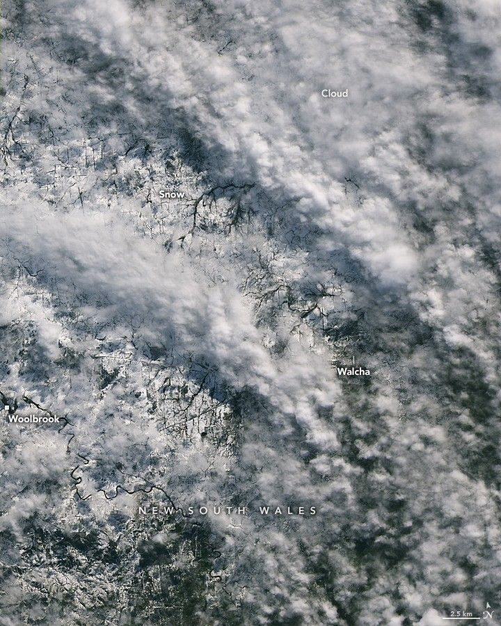

Fleeting Glimpse of Rare Snow
The Northern Tablelands in New South Wales, Australia, transformed into a winter wonderland on August 2, 2025. As much as 40 centimeters (16 inches) of snow piled up on the broad plateau that day—the most some areas have seen since the mid-1980s, according to news reports.
The next morning at about 9:45 a.m. local time, breaks in the clouds allowed the OLI (Operational Land Imager) on Landsat 8 to capture images of the snow-covered ground. The images show the landscape near the town of Walcha, located on the southeastern edge of the Northern Tablelands and about 300 kilometers (190 miles) north of Sydney.
The Walcha district is known for pasturelands that provide grazing for tens of thousands of cattle and hundreds of thousands of Merino sheep. In the satellite imagery, bands of white, puffy clouds extend across parts of the scene, while snow-covered ground in the center is broken up by winding rivers and dark lines separating fields.
In contrast to its serene, ethereal appearance in satellite and ground-based images, the fresh snow posed hazards to an area that seldom experiences such conditions. Vehicles became stuck on snowy roads, and officials closed several sections of highway, including the Oxley Highway running west out of Walcha, according to news reports.
Tree branches and carports that succumbed to the weight of the snow were reported across the region. The weather was caused by a low-pressure system sitting off the coast and pushing moisture inland, according to Australia’s Bureau of Meteorology.
While precipitation fell as snow in the highlands, rainfall was widespread at lower elevations, with some locations receiving more than 100 millimeters (4 inches) in 24 hours. Several flood watches and warnings were issued as river levels rose. The State Emergency Service received thousands of calls for assistance and responded to dozens of flood rescues.
Strong winds also brought significant swell to the New South Wales coast, where gusts exceeding 100 kilometers (60 miles) per hour were observed.